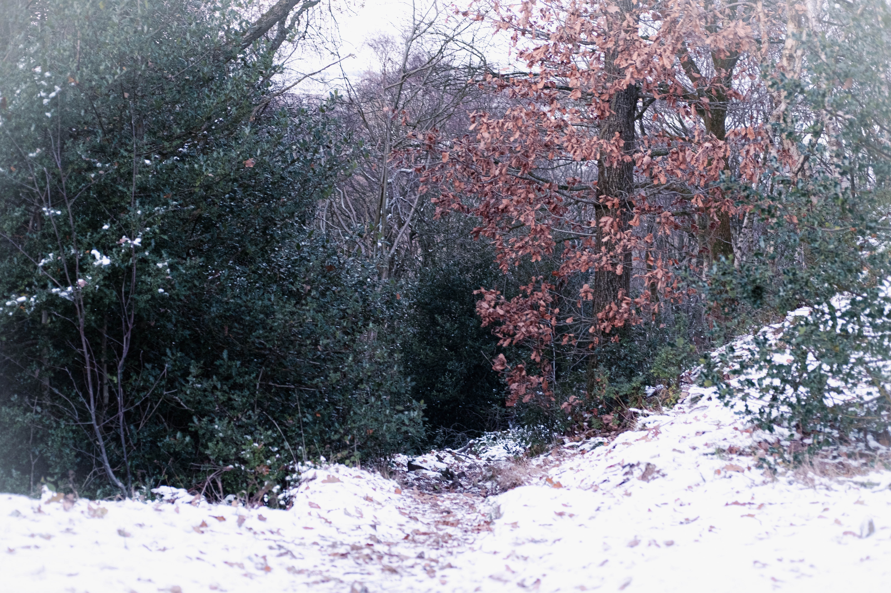

The Harmony of Openness and Reservation

This location is perhaps my favourite, and certainly most visited spot when returning home. From childhood onwards, I’ve taken walks here with family, friends, and girlfriends; although I often prefer strolling these paths alone.
The landscape views — which usually envelop the eyes with green fields and cloudy skies, rather than the glistening white snow that currently blankets them — feel like an invitation to open yourself up freely to the world; as if to remind yourself to keep your heart and mind open to what life has to offer.

But the area is also covered by dense woodland, which when you’re lost inside of you lose all sight of the sweeping views just beyond their border. They act almost as a reminder that it is important, every so often, to take the time to retreat inwards, and to turn your attention away from the world outside and instead towards yourself.
The dichotomy, which should actually be more of a harmonic balance, of openness and reservation (or maybe extroversion and introversion) is an important consideration, I think.
“Here is the world: see all the varieties it has to offer,” openness tells us, “the personalities, climates, cultures, languages, religions, sexualities, careers. There is so much to see, experience, and do. And the more you experience of it, the more experiences you will see there is to be had, and the more you will want to have.”
Whilst openness is exciting, and a great teacher, it is also rather unstable, and a gateway to unresolvable confusion. For despite life’s great variety, we can’t have it all. We must, to avoid the dreaded outcome of feeling lost, choose. “Shall we live in this country or that? Be with this partner or that partner? Be of this religion or that (or none at all)? Choose this career path or that?” At some point we must decide, even if it be only for the next few months/years, amongst the wide variety of options at stake.
“So you have seen the world,” reservation tells us, “now turn your attention inwards, and ask yourself, truly, and honestly, what it is you want from it?” This question is much harder to answer than it first might appear. It requires a level of self-understanding that none of us are ever really trained to discover. We cling to fleeting feelings of excitement and euphoria as evidence of what we truly want. That two weeks holiday we had with our family or friends, whilst the weather was pleasant, and we were off from work, dictates where we want to live. The honeymoon period, filled with lust, excitement and idealisation of a new partner, determines who we want to marry. Or the imagined pride from landing that well-paid/respected job determines our career path.

We are, generally, just bad judges at using current evidence to determine what we would want in the future. We must spend a great amount of time away from the world, perhaps with a diary at hand, or a musical instrument, or an oil painting canvas, or a therapist, or lost in the forest with a tent and classic novel, before we can begin to understand ourselves enough to answer this question.
And so, like yin and yang, chaos and order, feminine and masculine, openness and reservation, the two work in harmony to allow us to live our best lives. We must be open to what the world has to offer, whilst being reserved in what we select/discard from it.
An ongoing process of opening up to learn more about the world, and then retreating to learn more about ourselves. The two working together, arm in arm.
Green and white, open fields; dense and dark, closed forests.
♦